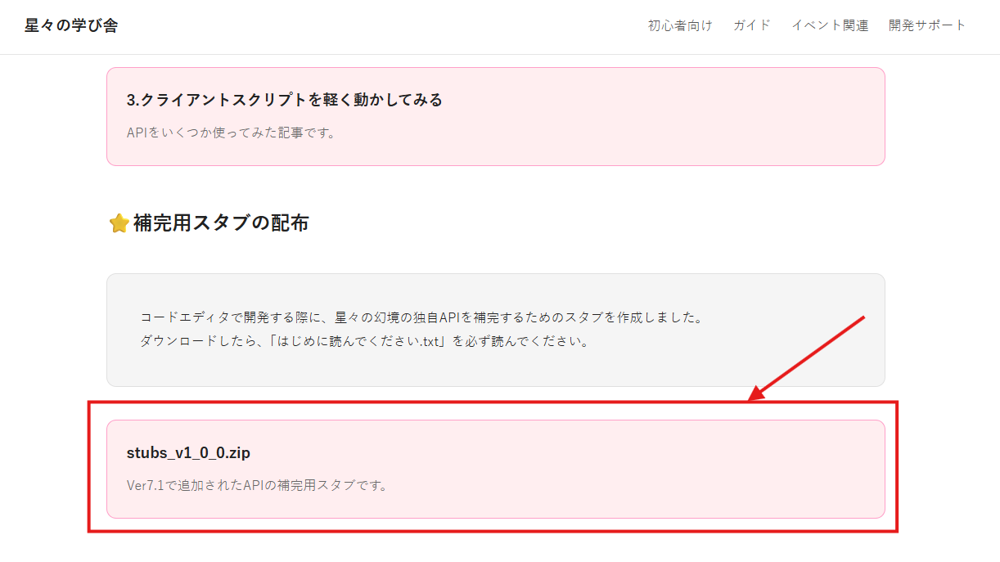
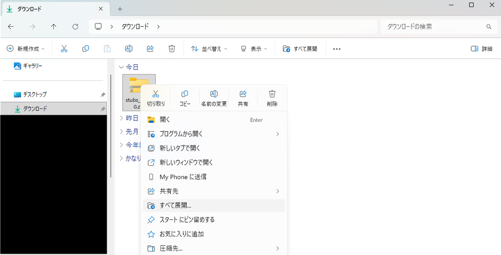
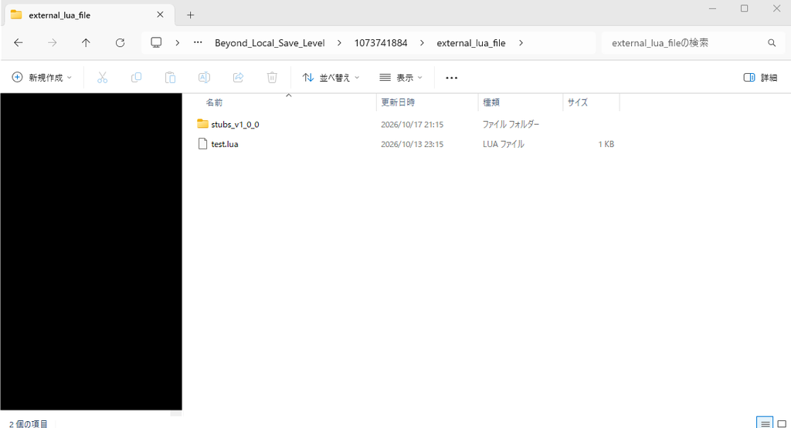
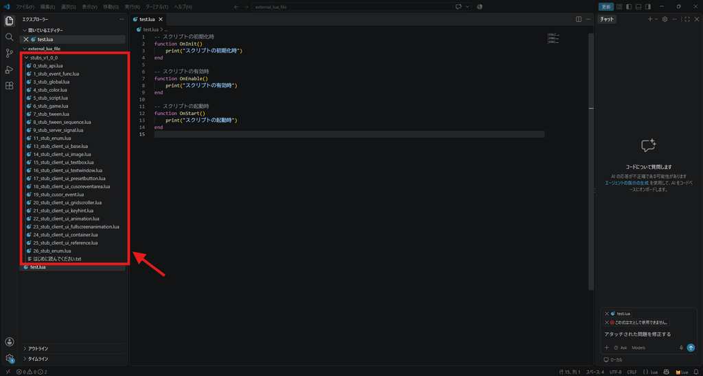
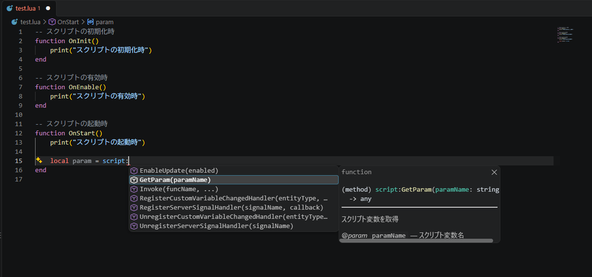
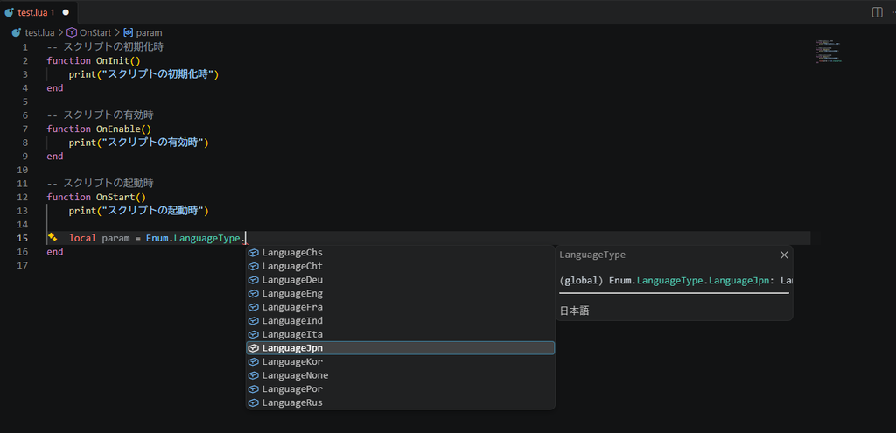
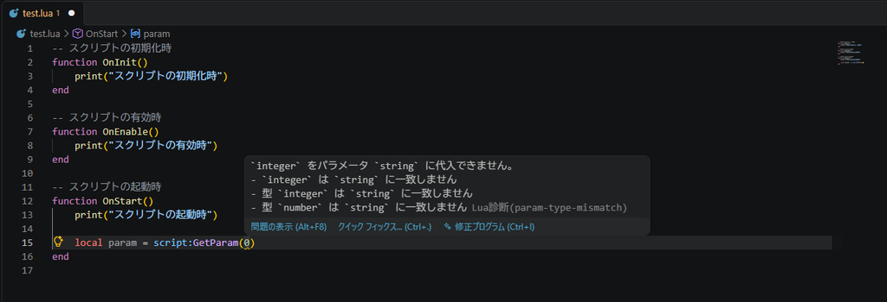
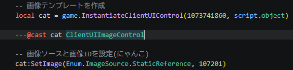

Luaを使ってみた
バージョン7.1でクライアントモジュール、クライアントスクリプトが追加されました。
クライアントスクリプトでクライアントモジュールを制御することによって、UIインタラクションの最適化、スムーズなアニメーション効果の実現、2Dゲームプレイの制作などが可能になるらしいです。
バージョン7.1に入って先行組が2Dゲームを投稿していますがすごいですね。
浮遊インタラクションが登場した時にも幻境制作に革命が起きたなぁと思いましたが、今回のアップデートでさらに幻境のステージに幅が広がりますね。
私は英語ができないので、いつも幻境制作のガイドを読むのには苦労してるんですけど、今回は今までの比じゃないですね。
そもそもほとんど書いてないんです。
クライアントスクリプトはLuaというプログラミング言語を使用するんですけど、幻境のガイドを読み漁っても何から始めたらいいのか全くわからなくて…
とりあえず、手探りで色々やってみようと思います。
私のプログラミング経験ですが、言語は違いますが、お仕事としてプログラミングをしているので、全くの素人ではありません。
基本的にプログラミング言語は、どれも似たようなものなので、完成されたソースコードを読むことはできます。
ただ、言語が異なると微妙に関数や書き方が違ったりするので、書くことについては初心者に毛が生えたものだと思ってください。
このカテゴリーには、私がLuaを使ってみた記録を残しておきます。
※なお英語がわかる方は、海外の方が公開しているドキュメントを見たほうが絶対にいいです！
ドキュメントだけでなく、便利そうな拡張機能も公開してました。
そもそもガイドに使用できるAPIも何も書いてないので、困り果てていたのですが、mihoyo.comのガイドDiscordサーバーで共有してくださっている方いました。
日本語に翻訳しましたが、原文を見たい方は以下のリンクから閲覧できます。
公式幻境制作ガイド(中国版)
Lua講座という幻境ステージが投稿されていました。
GUID: 64560938976
これまでプログラミングについて全く触れたことのない方は遊んでみるといいかもしれません。
⭐APIドキュメント
⭐Luaを使ってみよう
⭐補完用スタブの配布
コードエディタで開発する際に、星々の幻境の独自APIを補完するためのスタブを作成しました。
ダウンロードしたら、「はじめに読んでください.txt」を必ず読んでください。
🌸スタブファイルの配置




🌸スタブファイルの利用

例えば、ローカル変数「param」にスクリプト変数の値を代入しようとしたとき、
途中まで入力したところで、「Ctrl + Space」を押すことで、API一覧を表示して開発の手助けをしてくれます。

Enum定義なんかも登録してあります。
APIには日本語でコメントを入れていますので、APIドキュメントからAPIの内容を探す手間が省けます。

また、関数の型定義がしてあるので、間違った型を引数に入れているとエラーを出して教えてくれるようになります。
注意事項にも記載していますが、これはあくまでも補完用のスタブであり、実際の処理と異なる点には留意してください。
また、これらのスタブファイルを星々の幻境のクライアントスクリプトにマッピングすることもやめてください。
🌸スタブファイルを使う際の注意点
一部のAPIでは、実行時に派生クラス(ClientUIImageControl、ClientUITextBoxControl等)を返却しますが、このスタブでは返却される型を自動で判定することができません。
※補完機能を使用したい場合は、キャストすることで後続の処理の補完に影響が出ないようになります。

この例だと、catに代入される型は、スタブ上ではClientUIBaseControlになりますが、
実際に返却されるのは、ClientUIImageControl(1073741860が画像コントロール)であるため、キャストすることによって後続の処理に影響が出ないようにしています。